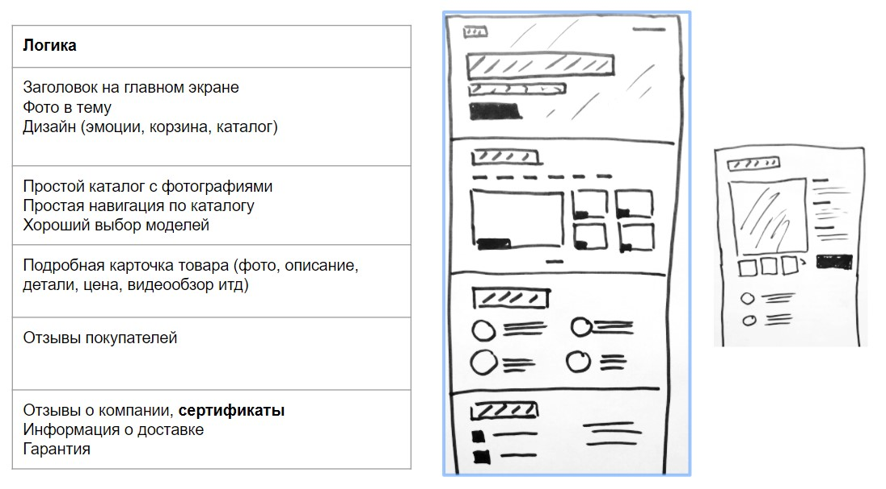

Мой Справочник | WEB-DESIGN | Прототип
Эскиз разрабатываемого сайта, который составляется вместе с ТЗ, либо после него. На его основе далее разрабатывается основной макет сайта.
Прототип состоит из блоков, нужно определиться какие блоки и сколько их будет на каждой странице.
Уже на этапе прототипа нужно думать об общей сетки страницы (1-кол, 2- кол, 3-кол).
Типичные блоки и их названия:
Базовые элементы:
- Header
- Логотип
- Поиск
- Бургер
- Меню сайта или ссылки для блоков
- Призыв к действию (Кнопка формы, номер телефона, email)
- Footer
- Копирайт
- Лого
- Соц сети
- Шаринг
- Контакты
- Menu или Sidebar
- Внутри хэдера или отдельно
Блоки:
- Презентационный блок (обычно идет после шапки на главной странице и должен вкраце пояснять кто мы и что мы умеем)
- Блок преимуществ (почему нужно обращаться именно к нам, бонусы)
- Наши технологии
- Портфолио (наши работы)
- Контакты (как с нами связаться, где мы находимся)
- О нас (немного слов о компании)
- Наша команды (немного слов о людях)
- Услуги (что мы умеем)
- Расчет стоимости
- Акция, скидки, спец. предложения
- Галерея
- Отзывы
- Католог
Инструменты для разработки прототипов:
Whimsical - Online editor
Balsamiq Mockups 3
16 инструментов для создания прототипов (ссылка)
